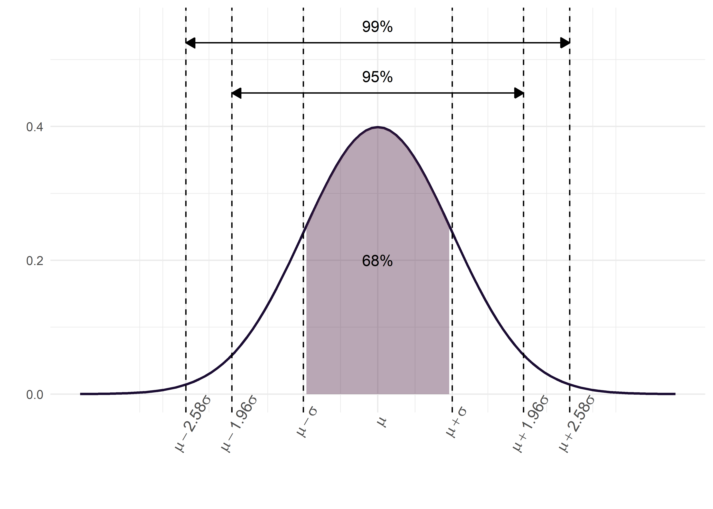
Distribuciones muestrales y estimación
Andrea Silva ![]()
Introducción
La distribución muestral de un estadístico es la distribución de todos los valores posibles que este puede tomar al calcularse en muestras aleatorias del mismo tamaño extraídas de la misma población. Este concepto es central en la inferencia estadística, ya que permite cuantificar la incertidumbre asociada a las estimaciones realizadas.
Para comprender mejor lo que es una distribución muestral, y cómo se elabora, ingresen a la siguiente videoclase:
Dado que elaborar la distribución muestral es una tarea dificultosa si la población es de un tamaño muy grande, e imposible si la población es infinita, es posible obtener aproximaciones de las distribuciones muestrales tomando un gran número de muestras de un tamaño dado.
Intervalos de Confianza (IC)
Una forma eficaz de abordar la inferencia estadística es a través de los intervalos de confianza (IC), ya que, aunque son procedimientos inferenciales, están estrechamente vinculados con la estadística descriptiva.
Supongamos que queremos estimar la media de colesterol de la población de Mar del Plata. Sería inviable medir el colesterol de cada habitante, por lo que optamos por tomar una muestra de, por ejemplo, 100, 200 o 300 individuos (más adelante veremos cómo determinar el tamaño adecuado de la muestra). Debemos recordar que diferentes muestras producirán en general medias diferentes. Existe, por tanto, un grado de incertidumbre asociado. Si hiciéramos una estimación puntual, obtendríamos un solo valor, pero sin información sobre su variabilidad. No sabríamos qué tan cerca o lejos está nuestra estimación (\(\bar{x}\)) de la verdadera media poblacional (\(\mu\)).
El intervalo de confianza proporciona un rango de valores dentro del cual se espera que se encuentre el valor verdadero del parámetro poblacional, con un cierto nivel de confianza. A diferencia de la estimación puntual que proporciona un único valor numérico, el intervalo consta de dos valores entre los cuales se supone está contenido el parámetro estimado. Entonces, el intervalo de confianza puede expresarse como:
\[ IC = estimador~puntual \pm (coeficiente~de~confiabilidad) * (error~ estandar) \]
donde:
-
Estimador puntual:
Para la media poblacional (\(\mu\)), se toma la media muestral(\(\bar{x}\)).
Para una proporción de la población (\(p\)), se toma la proporción muestral (\(\hat{p}\)).
Coeficiente de confiabilidad: Se relaciona con el nivel de confianza deseado (por ejemplo, 90%, 95% o 99%), y se expresa como \(1 - \alpha\), es decir la probabilidad de que el parámetro se encuentre dentro del IC. Recordemos que el nivel de significancia (\(\alpha\)) es la probabilidad de que el parámetro no se halle dentro del IC y es un valor generalmente pequeño (por ejemplo, 0.1, 0.05 o 0.01) expresado como probabilidad o porcentaje (por ejemplo, 10%, 5% o 1%).
-
Error estándar (SE): Representa la variabilidad de la distribución muestral. Por ejemplo, para la media el error estándar se calcula como la raíz cuadrada de la varianza de la distribución muestral:
\[ SE = \frac{\sigma}{\sqrt{n}} \]
Donde \(\sigma\) es la desviación estándar poblacional y \(n\) el tamaño de la muestra. Si se estima un IC para una proporción, el error estándar es:
\[ SE = \sqrt{\frac{\hat{p}(1 - \hat{p})}{n}} \]
El proceso se fundamenta en el Teorema del Límite Central (TCL), que establece que, para muestras suficientemente grandes, la distribución de \(\bar{x}\) es aproximadamente normal, con media \(\mu\) y varianza \(\sigma^2/n\). Así, la variable tipificada:
\[ Z = \frac{\bar{x}-\mu}{\sigma} \]
sigue una distribución normal estándar (media 0 y desviación estándar 1), lo que permite calcular probabilidades y construir el IC.
En cualquier distribución normal:
Entre \(\mu \pm \sigma\) se encuentra el 68% de los datos.
Entre \(\mu \pm 2\sigma\) se encuentra el 95%.
Entre \(\mu \pm 3\sigma\) se encuentra el 99%.
El siguiente gráfico ilustra lo explicado anteriormente:
Sabemos que, independientemente de la localización de los valores, aproximadamente el 95% de los valores posibles de \(\bar{x}\) en la distribución muestral estarán a menos de dos desviaciones estándar de la media \(\mu\). Es decir, el intervalo \(\mu \pm 2\sigma\) contendrá el 95% de los valores posibles de \(\bar{x}\).
Supongamos que formamos intervalos a partir de todos los posibles valores de \(\bar{x}\), calculados a partir de todas las muestras posibles de tamaño \(n\) tomadas de la población de interés. Esto generará una gran cantidad de intervalos de la forma \(\mu \pm 2\sigma\), todos con la misma amplitud, centrados en torno a una \(\mu\) desconocida.
Aproximadamente el 95% de estos intervalos tendrán sus centros dentro del intervalo \(\mu \pm 2\sigma\). Cada uno de estos intervalos, que se encuentran dentro de \(\mu \pm 2\sigma\), puede contener el valor verdadero de \(\mu\).
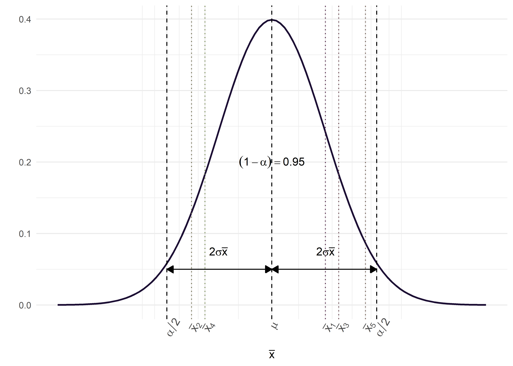
Finalmente, y basándonos en las propiedades de la distribución Normal, se puede deducir la expresión del IC:
\[ P(Z_{\alpha/2} < Z_{1-\alpha/2)} = 1 - \alpha \] Reemplazando \(Z\):
\[ P(Z_{\alpha/2} < \frac{\bar{x} - \mu}{\frac{\sigma}{\sqrt{n}}} < Z_{(1-\alpha/2)}) = 1-\alpha \]
Reordenando, la expresión del IC para la media queda:
\[ \bar{x} - Z_{\alpha/2}\sqrt{\frac{\sigma^2}{n}} < \mu < \bar{x} + Z_{\alpha/2}\frac{\sigma^2}{n} \]
¿Cómo se interpreta un IC?
Si hubiésemos tomado múltiples muestras del mismo tamaño de la población, en al menos \(100 * (1 − \alpha)\%\) de las ocasiones el intervalo calculado contendría el parámetro poblacional real. Es decir, un IC al 95% implica que, a largo plazo, el 95% de los intervalos obtenidos a partir de muestras repetidas incluirán el valor verdadero del parámetro.
El producto del coeficiente de confiabilidad y el error estándar se denomina precisión de la estimación y es el componente responsable de la amplitud del IC. Recordemos que la fórmula general para construir un intervalo de confianza era:
\[ IC = estimador~puntual \pm (coeficiente~de~confiabilidad) * (error~ estandar) \]
Para el caso de la media:
Aumento de la confiabilidad: Si se incrementa el nivel de confianza, el coeficiente (por ejemplo, pasando de 1.96 a un valor mayor) aumenta, lo que a su vez incrementa la amplitud del IC.
-
Reducción del error estándar: Si se fija la confiabilidad (por ejemplo, al 95%), para disminuir la amplitud del IC es necesario reducir el error estándar. Dado que el error estándar de la media es:
\[ SE = \frac{\sigma}{\sqrt{n}} \]
y considerando que \(\sigma\) es constante, la única forma de disminuir el error estándar es aumentando el tamaño muestral (\(n\)).
Surge entonces la pregunta: ¿qué tan grande debe ser \(n\)?
La respuesta dependerá de \(\sigma\), del nivel de significación (\(\alpha\)) y de la amplitud deseada para el IC. La relación es:
\[ Amplitud = Z \frac{\sigma}{\sqrt{n}} \Longrightarrow n = \frac{Z^2\sigma^2}{Amplitud^2} \quad (Z = 1.96~si~\alpha = 0.05) \]
(En la práctica, \(\sigma\) generalmente no se conoce, así que se usa su estimación muestral).
La expresión del error estándar varía según el parámetro a estimar. Hemos visto el caso de la media; si lo que se desea es calcular un IC para una proporción, recordemos que, para muestras grandes, la distribución de las proporciones de la muestra es aproximadamente normal de acuerdo con el TCL. En este caso:
La media de la distribución es la proporción real \(p\)
La varianza es \(p(1-p)/n\), lo que nos lleva a que el error estándar es:
\[ SE = \sqrt{\frac{\hat{p}(1-\hat{p})}{n}} \]
y el IC para la proporción se expresa como:
\[ \hat{p} - Z_{1-\alpha/2}\sqrt{\frac{\hat{p}(1-\hat{p})}{n}} < p < \hat{p} + Z_{1-\alpha/2}\sqrt{\frac{\hat{p}(1-\hat{p})}{n}} \]
Dado que un intervalo de confianza implica una declaración probabilística, su cálculo se fundamenta en las distribuciones muestrales de los estimadores y en el correspondiente error estándar. Aunque las fórmulas pueden parecer complejas, los paquetes estadísticos (como R) realizan estos cálculos automáticamente. Lo fundamental es comprender en qué depende la amplitud del IC (nivel de confianza, error estándar y tamaño muestral) y cómo cada uno de estos componentes influye en la precisión de la estimación.
Para profundizar y visualizar simulaciones sobre estos conceptos, pueden explorar recursos interactivos como:
➡️ Viendo la teoría: Una introducción visual a probabilidad y estadística
Además, existe un ejemplo práctico de cálculo de IC para la media utilizando la distribución \(t\) de Student en el siguiente enlace:
Test de hipótesis
Aunque los estudios de corte transversal no se diseñan originalmente con grupos de comparación, en aquellos de carácter más analítico es frecuente establecer comparaciones. Por ejemplo, pueden surgir preguntas como:
¿La prevalencia de la enfermedad es mayor en mujeres, en determinados grupos etarios o en una provincia específica?
Con esto en mente, revisaremos las herramientas que permiten comparar grupos mediante test o contrastes de hipótesis. El propósito de estos test es ofrecer al investigador una herramienta para tomar decisiones sobre la población a partir de la información obtenida en una muestra.
Antes de adentrarnos en la parte estadística, es importante distinguir entre dos tipos de hipótesis:
Hipótesis de investigación: Es la conjetura o suposición que motiva la investigación.
Hipótesis estadística: Es aquella que puede ser evaluada mediante técnicas estadísticas apropiadas.
En este texto nos centraremos en aclarar aspectos relativos a las hipótesis estadísticas, asumiendo que las hipótesis de investigación ya han sido discutidas previamente por los investigadores. Describiremos brevemente el razonamiento subyacente a estos test.
Los contrastes de hipótesis parten de una hipótesis nula, la cual afirma que los dos grupos comparados son iguales o, en otras palabras, que las diferencias observadas se deben únicamente al azar. Como ya se ha mencionado, la variabilidad intrínseca de cualquier muestra impide que la diferencia entre grupos sea exactamente cero.
El método estadístico nos permite cuantificar la diferencia entre grupos asumiendo que, si repitiésemos el experimento infinitas veces obtenemos todas las posibles muestras del tamaño indicado a partir de nuestras poblaciones (distribución muestral), las diferencias entre grupos “iguales” se distribuirían conforme a una curva teórica. Basándonos en las propiedades de esta distribución, podemos determinar un valor límite que comprende, por ejemplo, el 95% o el 99% de las diferencias esperadas. Si la diferencia observada entre las muestras supera este valor límite, se considera excesiva para ser atribuible al azar y, por tanto, se rechaza la hipótesis nula. Por el contrario, si la diferencia cae dentro del área del 95%, se concluye que la diferencia encontrada podría atribuirse al azar, y no habría evidencia que nos permita rechazar la hipótesis nula. En estos casos decimos que los grupos “no son diferentes” pero no “son iguales”, ya que la variabilidad inherente impide probar una igualdad exacta.
Los contrastes de hipótesis se realizan generalmente bajo las siguientes condiciones:
Se asume a priori que la ley de distribución de la población es conocida.
Se extrae una muestra aleatoria de dicha población.
El conjunto de estas técnicas de inferencia se denomina técnicas paramétricas. Sin embargo, existen otros métodos, denominados técnicas no paramétricas o contrastes de distribuciones libres, que no requieren estimar parámetros ni suponer una ley de probabilidad específica para la población. Algunos de estos métodos serán desarrollados más adelante en este módulo.
Es importante señalar que los contrastes de hipótesis se utilizan no solo en estudios transversales, sino con mayor frecuencia en diseños en los que a priori existen grupos de comparación, como en estudios de casos y controles, cohortes, ensayos clínicos, entre otros. Desarrollaremos aquí la teoría que los sustenta y los utilizaremos a lo largo de todo el curso.
Estructura del test de hipótesis
Los componentes básicos de cualquier test de contraste de hipótesis son:
Hipótesis nula (\(H_0\)): Afirma que no existe diferencia entre los grupos que se comparan, es decir, que las variaciones observadas se deben únicamente al azar.
Hipótesis alternativa (\(H_1\)): Es la conjetura o suposición que plantea el investigador, estableciendo que sí existe una diferencia entre los grupos. Generalmente es complementaria de la \(H_0\).
Estadístico de prueba: Es el valor calculado a partir de los datos muestrales que se utiliza para tomar la decisión sobre la \(H_0\). Cada tipo de problema tiene un estadístico adecuado, cuya magnitud, al compararse con su distribución muestral (por ejemplo, la distribución normal estándar en el caso del estadístico \(Z\)), permite determinar si las diferencias observadas son atribuibles al azar.
-
Valor crítico o Región crítica: La región crítica se establece en función del nivel de significación (\(\alpha\)) y consiste en el conjunto de valores extremos del estadístico de prueba que, de ser alcanzados, llevarían a rechazar la \(H_0\). Todos los posibles valores del estadístico se ubican en el eje horizontal de la gráfica de su distribución, y la región crítica delimita aquellos valores que son muy poco probables bajo la hipótesis nula.
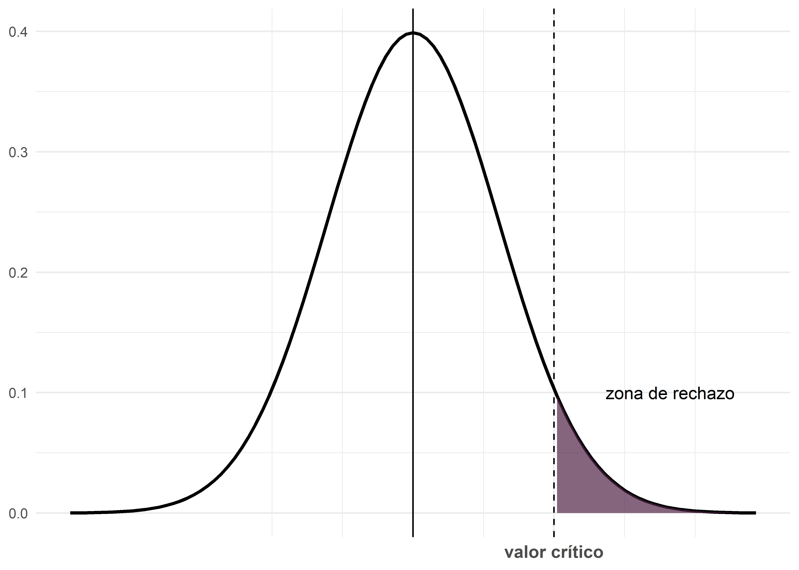
La regla de decisión es la siguiente:
- Si el valor del estadístico de prueba calculado a partir de la muestra cae en la región crítica, se rechaza la \(H_0\) y se concluye que las diferencias observadas son estadísticamente significativas.
- Si el valor no cae en la región crítica, no se rechaza la \(H_0\); esto indica que las diferencias entre lo observado y lo esperado pueden explicarse por el azar. Es decir, no son estadísticamente significativas.
Nivel de significación (\(\alpha\)): Es la probabilidad de cometer un error tipo I, es decir, rechazar \(H_0\) cuando es verdadera. Este valor, elegido por el investigador (comúnmente 5% o 1%), determina el límite entre la región de no rechazo y la región crítica.
-
Valor p: Es una medida de qué tan probable son los resultados de la muestra, considerando que \(H_0\) sea verdadera.
Un valor \(p\) muy pequeño indica que es muy poco probable obtener los resultados observados para el estadístico muestral si \(H_0\) fuese cierta, por lo que debemos rechazarla.
Esto significa que si el valor \(p \leq \alpha\), es posible rechazar \(H_0\); mientras que si \(p > \alpha\), no es posible rechazar la hipótesis nula.
Por ejemplo, si en un test de contraste de dos proporciones se obtiene un estadístico \(Z= 3,034\) y un valor \(p = 0.0024\), esto significa que la probabilidad de obtener un valor de \(Z\) de 3.034 o mayor, suponiendo que \(H_0\) es cierta, es del 0.24%. Dado que este valor es mucho menor que un nivel de significación del 5% (o incluso del 1%), se rechaza \(H_0\) y se concluye que la diferencia observada es estadísticamente significativa. En otras palabras, si bajo un supuesto dado, la probabilidad de un suceso observado particular es excepcionalmente pequeña, concluimos que el supuesto probablemente es incorrecto (regla del suceso infrecuente).
Tipos de contrastes
Los contrastes de hipótesis se pueden clasificar en función de la forma de la hipótesis alternativa (\(H_1\)). Esto determina si el contraste es bilateral o unilateral (de cola izquierda o de cola derecha), también denominado prueba de dos colas, de cola izquierda o de cola derecha.
Las colas en una distribución son las regiones extremas limitadas por los valores críticos. Se conocen:
Contraste Bilateral (Prueba de Dos Colas)
-
Hipótesis Alternativa: \(H_1: \mu_1 \neq \mu_2\)
Es decir, se plantea que existe una diferencia, sin especificar la dirección.
Región Crítica: Se ubica en ambos extremos de la distribución del estadístico de prueba.
-
Nivel de Significación: El nivel de significación total \(\alpha\) se reparte equitativamente entre ambas colas, asignando \(\alpha/2\) a cada una.
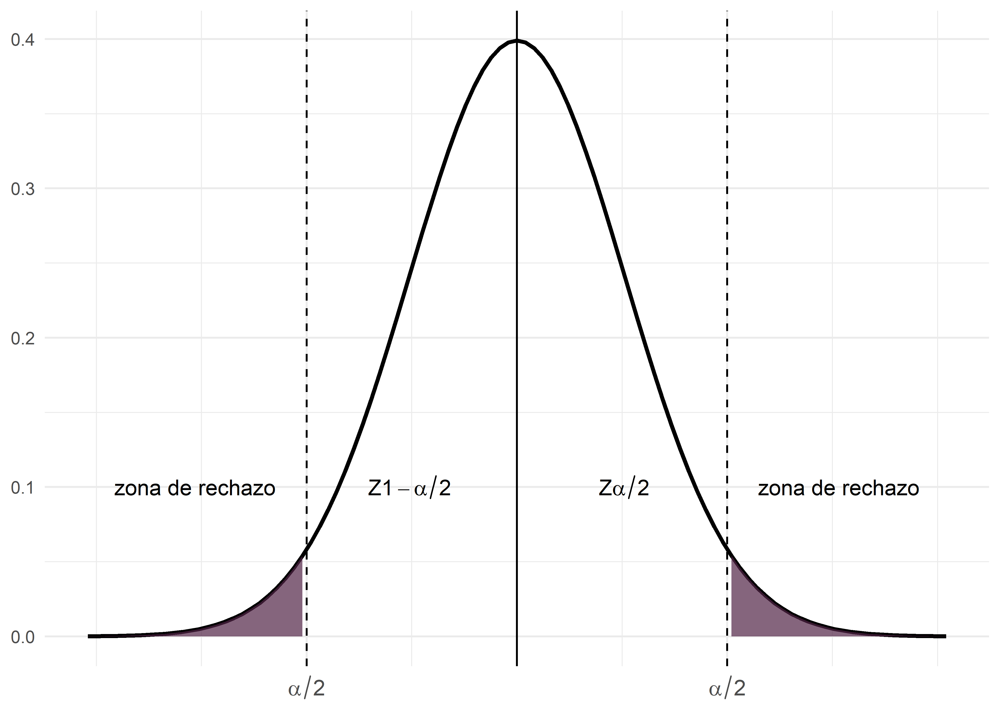
Contraste unilateral izquierdo (Prueba de cola izquierda)
-
Hipótesis Alternativa: \(H_1: \mu_1 < \mu_2\)
Se plantea que la media del primer grupo es menor que la del segundo.
Región Crítica: Se concentra en el extremo izquierdo de la distribución.
-
Nivel de Significación: Toda el área crítica tiene un tamaño \(\alpha\).
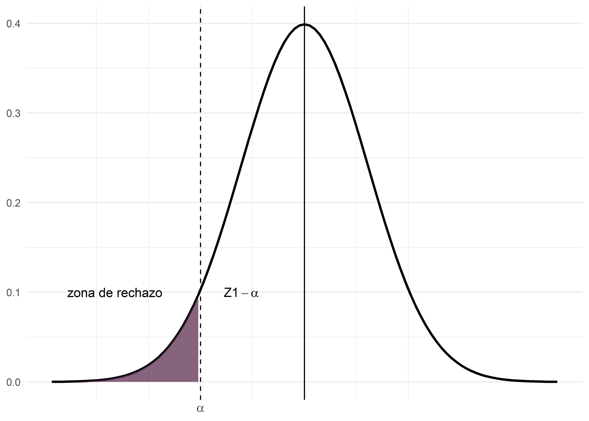
Contraste unilateral derecho (Prueba de cola derecha)
-
Hipótesis Alternativa: \(H_1: \mu_1 > \mu_2\)
Se plantea que la media del primer grupo es mayor que la del segundo.
Región Crítica: Se concentra en el extremo derecho de la distribución.
-
Nivel de Significación: Toda el área crítica tiene un tamaño \(\alpha\).
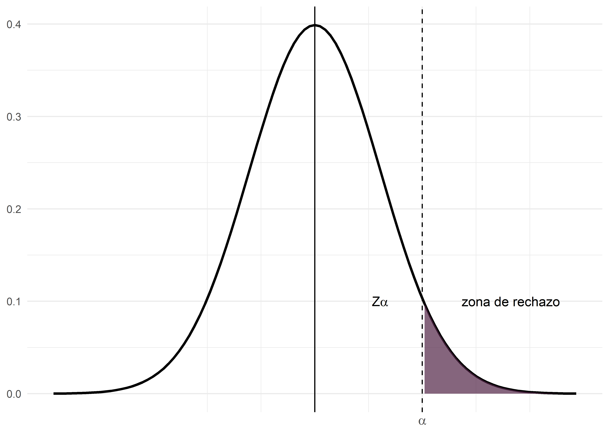
Errores
Al utilizar el razonamiento de los contrastes de hipótesis, existen dos tipos principales de errores que podemos cometer:
Error tipo I (\(\alpha\)): Ocurre cuando el investigador rechaza la hipótesis nula (\(H_0\)) siendo esta verdadera en la población y se concluye erróneamente que existe una diferencia cuando en realidad no la hay. Se suele eligir un valor pequeño de \(\alpha\) (0.01, 0.05 y 0.10) para hacer que la probabilidad de rechazo de \(H_0\) sea pequeña.
Error tipo II (\(\beta\)): Ocurre cuando el investigador no rechaza la \(H_0\) siendo esta falsa en la población, es decir, se falla en detectar una diferencia real. Generalmente \(\beta\) es mayor que \(\alpha\), pero su valor real se desconoce en la práctica.
Es importante notar que, una vez que se realiza el procedimiento de prueba, no es posible saber con certeza si se ha cometido alguno de estos errores, ya que se desconoce el verdadero estado de la realidad. Sin embargo, al fijar un \(\alpha\) pequeño, se busca asegurar que, en caso de rechazar la \(H_0\), la probabilidad de haber cometido un error Tipo I sea baja.
En resumen, al interpretar los resultados de un test de hipótesis:
Si se rechaza la \(H_0\): se asume que la probabilidad de haber cometido un error Tipo I es baja (debido al valor pequeño de \(\alpha\)).
Si no se rechaza la \(H_0\): se desconoce el riesgo real de un error Tipo II, pero es importante tener en cuenta que, en muchas situaciones, este riesgo es mayor que el de un error Tipo I.
La tabla que se presenta a continuación resume las posibles situaciones a las que nos enfrentamos con los test de hipótesis:
| No rechazar H0 | Rechazar H0 | |
|---|---|---|
| H0 es cierta | Correcto (1-α) | Error tipo I (α) |
| H0 es falsa | Error tipo II (β) | Correcto (1-β) |
Para quienes están familiarizados con el ámbito del diagnóstico, existe una clara analogía entre los falsos positivos y falsos negativos en las pruebas diagnósticas y, respectivamente, el error Tipo I y el error Tipo II en los contrastes de hipótesis.
Hemos discutido el significado de \(\alpha\) (error Tipo I); ahora veamos qué implica \(\beta\). Recordemos que el error Tipo II es análogo a los falsos negativos de las pruebas diagnósticas: es la probabilidad de no detectar una diferencia cuando, en realidad, ésta existe. En otras palabras, \(\beta\) es la probabilidad de no rechazar la hipótesis nula (\(H_0\)) siendo esta falsa.
A diferencia de \(\alpha\) que se fija en un único valor y es determinado por el investigador, \(\beta\) varía según el valor real del parámetro en estudio. Por ejemplo, si consideramos la hipótesis nula \(H_0: \mu_1 - \mu_2 = 0\), habrá un valor de \(\beta\) para cada posible diferencia entre \(\mu_1\) y \(\mu_2\) cuando el valor real no sea cero. La probabilidad de detectar correctamente una diferencia real - es decir, de obtener un resultado estadísticamente significativo cuando la diferencia existe- se denomina potencia estadística y se expresa como \(1-\beta\).
Los contrastes de hipótesis no son exclusivos de los estudios transversales; por el contrario, su uso es más común en estudios analíticos que involucran grupos de comparación, tales como estudios de casos y controles, cohortes o ensayos clínicos. Por ejemplo, en un ensayo clínico que evalúa dos tratamientos, la potencia estadística refleja la capacidad del estudio para identificar un efecto real del tratamiento.
Es deseable que la potencia del estudio sea lo mayor posible, ya que esto incrementa la probabilidad de detectar diferencias verdaderas. Sin embargo, no es posible minimizar ambos errores simultáneamente ya que al disminuir \(\alpha\) (es decir, al ser más exigentes para rechazar la \(H_0\)), \(\beta\) tiende a aumentar, y viceversa. En los contrastes, la hipótesis privilegiada es \(H_0\) que solo será rechazada cuando la evidencia de su falsedad supere el umbral del \(1-\alpha\). Esto significa que, a menos que la evidencia en contra de \(H_0\) sea muy significativa, se opta por no rechazarla. Lo ideal a la hora de definir un test es encontrar un compromiso entre \(\beta\) y \(\alpha\).
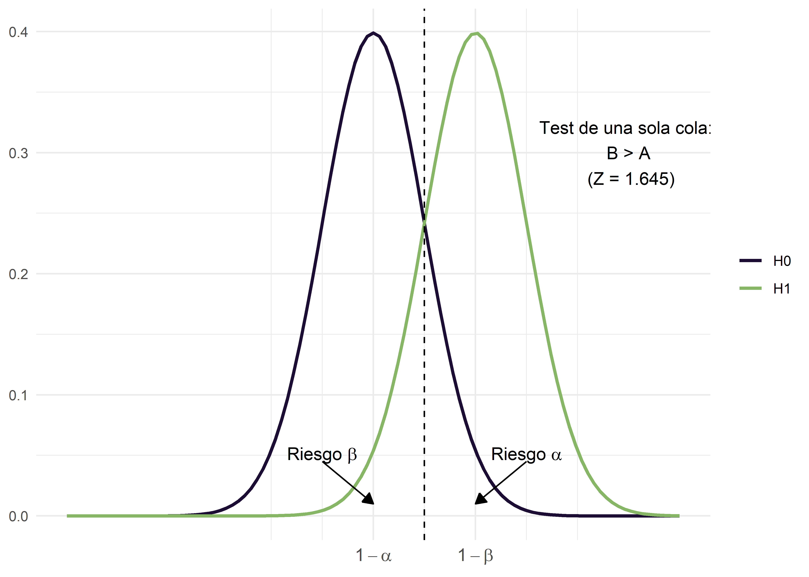
Mientras que para tests bilaterales:
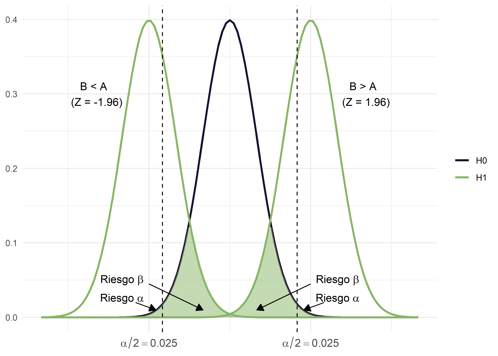
Finalmente, podemos decir que la potencia estadística ofrece un segundo mecanismo de seguridad en un contraste de hipótesis. Es como contar con una protección adicional en la toma de decisiones: si solo dispusiéramos del nivel de significación (\(\alpha\)), tendríamos menos garantías. Al incorporar la potencia (\(1-\beta\)) agregamos un segundo control. Por ello, en un contraste no basta con tener un valor p pequeño; también se necesita una potencia alta, que en la práctica suele fijarse en un 80% (es decir, \(1 - \beta = 0.8\)).
Por otro lado, cuando existe una diferencia real —o un efecto real de una terapia, o una verdadera diferencia entre dos fármacos—, la magnitud de ese efecto influye en la facilidad para detectarlo. Los efectos grandes son más fáciles de identificar que los pequeños. Para estimar la potencia de una prueba, debemos especificar el efecto mínimo que valga la pena identificar.
La potencia de un test estadístico depende de tres factores que actúan de manera interrelacionada:
El riesgo de error que se tolerará al rechazar la hipótesis de ausencia de efecto o diferencia (\(\alpha\)).
La dimensión de la diferencia que se desea identificar en relación con la variabilidad en las poblaciones.
El tamaño de la muestra.
Del mismo modo que en un problema de estimación se necesita una idea de la magnitud a estimar y del error aceptable para definir el tamaño de la muestra, en un contraste de hipótesis se requiere conocer el tamaño del efecto que se quiere detectar. Así, el tamaño muestral se determina en función del nivel de confianza y de la potencia de la prueba, además de otros aspectos relacionados con el diseño y la prueba estadística elegida.
En epidemiología, una de las situaciones más frecuentes al diseñar un estudio es el cálculo del tamaño muestral para un nivel de confianza del 95% y una potencia del 80%, que, como se mencionó, es un nivel de potencia alto y que además permite manejar un \(\alpha\) relativamente bajo. El lenguaje R cuenta con diversas funciones para calcular y visualizar la relación entre tamaño muestral, potencia, tamaño del efecto y nivel de confianza, facilitando el diseño de estudios con un adecuado balance entre la probabilidad de detectar diferencias reales y la de controlar errores estadísticos.
Por ejemplo, la función pwr.t.test() del paquete pwr (Champely 2020), calcula la potencia para pruebas \(t\) de Student de medias (para una muestra, dos muestras y muestras pareadas), basado en el tamaño de la muestra, el nivel de confianza y el tamaño de efecto:
pwr.t.test(n, d, sig.level = 0.05, power, type, alternative)Donde:
n: Número de observaciones para cada grupo.-
d: tamaño de efecto (\(d\) de Cohen) - diferencia (estandarizada) entre grupos.Nota: La \(d\) de Cohen representa las desviaciones estándar que separan dos o más grupos. Por ejemplo: \(d_{Cohen} = 0.5\) representa que la diferencia entre grupo experimental y muestral es de media desviación estándar. Cohen sugirió (provisoriamente) que 0.2 es un tamaño de efecto pequeño, 0.5 es mediano y 0.8 es grande,
sig.level: nivel de significación (probabilidad del error de tipo I).power: potencia del test (1 menos la probabilidad del error tipo II).type: tipo de test ("two.sample","one.sample","paired").alternative: palabra que especifica la hipotesis alternativa, debe ser"two.sided"(predeterminado),"greater"or"less".
La función se ejecuta incorporando todos los argumentos obligatorios (d,n, power y sig.level) menos el que se quiere calcular. En ese caso se iguala a NULL o se omite.
Supongamos que queremos conocer el tamaño de la muestra para detectar diferencias en la media de la hemoglobina glicosilada entre dos grupos de pacientes con tratamientos de control de la diabetes distintos. Aceptamos un nivel de efecto convencional de una pequeña desviación (\(d_{Cohen} = 0.2\)), una potencia del 80% y una significación habitual de 0,05.
Cargamos el paquete requerido:
Calculamos el tamaño de muestra:
pwr.t.test(d = 0.2,
power = 0.8,
sig.level = 0.05,
type = "two.sample",
alternative = "two.sided")
Two-sample t test power calculation
n = 393.4057
d = 0.2
sig.level = 0.05
power = 0.8
alternative = two.sided
NOTE: n is number in *each* groupTambién podemos graficar la salida:
pwr.t.test(d = 0.2,
power = 0.8,
sig.level = 0.05,
type = "two.sample",
alternative = "two.sided") |>
plot()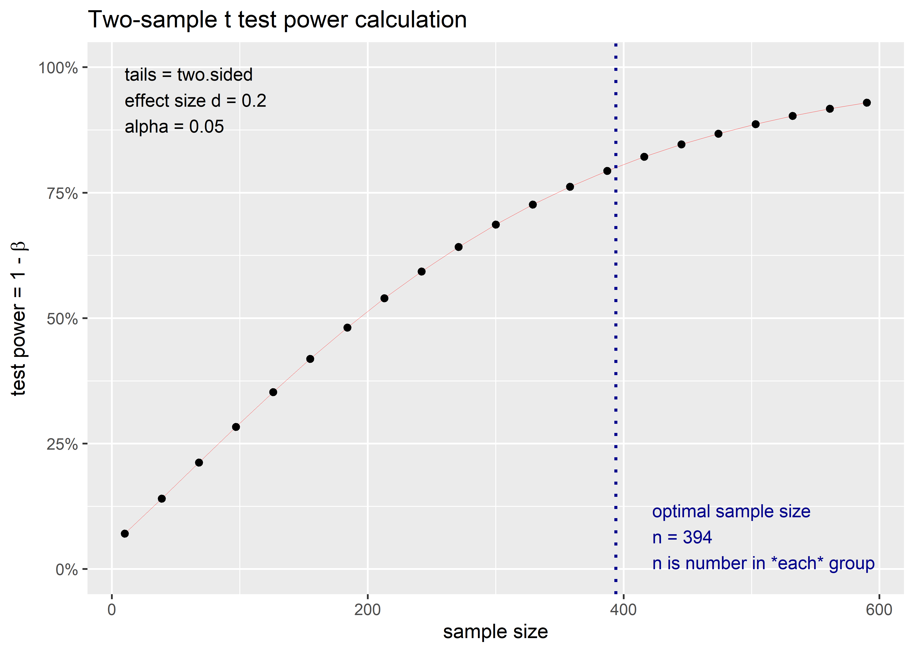
Observamos que, si por ejemplo tomásemos una muestra de 300 individuos por grupo, la potencia del estudio con ese tamaño de efecto y nivel de significación del 0,05 sería aproximadamente de 68%.
¿Qué test se debe aplicar en cada caso?
Hemos discutido la mecánica general de los test de hipótesis. Ahora, nos centraremos en orientarnos sobre qué test aplicar en cada situación. Aunque existe un desarrollo teórico detrás de cada caso, aquí nos quedaremos con ciertas reglas prácticas.
Para sistematizar los contrastes de hipótesis, es útil responder dos preguntas fundamentales:
¿Qué tipo de variable dependiente tengo?
La variable resultado puede ser cuantitativa, cualitativa, de tiempo hasta un evento, etc.¿Qué se está comparando?
Esto se traduce en evaluar el tipo de experimento: ¿se comparan dos grupos o más? ¿Son muestras independientes o relacionadas (por ejemplo, medidas en el mismo grupo antes y después de una intervención)?
Variable resultado cuantitativa
Cuando la variable de interés es cuantitativa, la comparación de grupos generalmente se traduce en comparar las medias de dichos grupos. En este contexto, se deben responder una tercera pregunta y es si dicha variable se distribuye normalmente, porque si no fuera así, debemos recurrir a los contrastes no paramétricos.
En la siguiente sección detallaremos las pruebas de normalidad y heterogeneidad de varianzas y su aplicación en R.
Por ejemplo, para comparar dos grupos se plantearía:
- \(H_0: \mu_1 = \mu_2\) (o su equivalente \(\mu_1 - \mu_2 = 0\))
- \(H_1: \mu_1 \neq \mu_2\) (contraste bilateral) o bien \(\mu_1 < \mu_2\) o \(\mu_1 > \mu_2\) (contrastes unilaterales).
Se calcula el estadístico de prueba (por ejemplo, \(t\) de Student o \(Z\), según el tamaño de la muestra y si se conoce la varianza poblacional), se determina la región de rechazo y, finalmente, si \(p < \alpha\) rechazo \(H_0\) y si \(p > \alpha\) no rechazo \(H_0\).
A continuación presentamos un esquema que sirve de guía para potenciales situaciones:
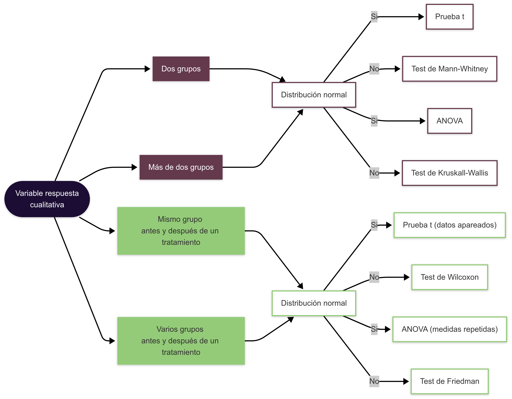
Hay algo más que los estadísticos nos “obligan” a considerar en el caso que compare medias independientes y se haya verificado la normalidad de la distribución, y se trata de considerar si las varianzas de las poblaciones que comparo son iguales o diferentes. El algoritmo de resolución es el siguiente:
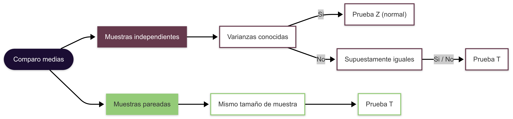
Cuando trabajamos con muestras independientes, a menudo nos encontramos en el escenario de varianzas desconocidas. Esto nos obliga a realizar, de manera previa, un test de homogeneidad de varianzas para determinar si se puede asumir que son iguales o si, por el contrario, difieren. La razón es que, aunque se utiliza el estadístico \(t\) de Student para comparar las medias, su cálculo y la forma en que se distribuye varían en función de si las varianzas de los grupos son iguales o no.
Variable resultado cualitativa
Cuando la variable dependiente es cualitativa (categórica), como por ejemplo Enfermo (Sí/No) o Expuesto (Sí/No), la comparación de grupos no se basa en medias, sino en proporciones. Para ello, se utilizan pruebas estadísticas específicas según el número de grupos y el diseño del estudio.
A continuación, presentamos una guía análoga a la anterior:
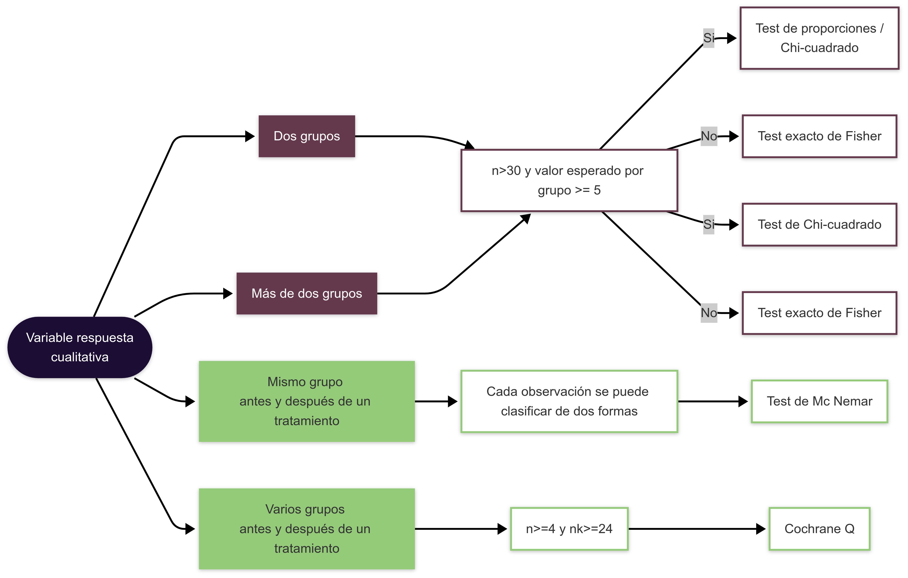
Ejemplo práctico en R
En el archivo “bebe1.txt” se encuentran datos de una muestra aleatoria de los pesos al nacer de 186 bebés cuyas madres no consumieron cocaína durante el embarazo. En el archivo “bebe2.txt” se encuentran datos de una muestra aleatoria de 190 bebés cuyas madres consumieron cocaína durante el embarazo. Nos interesa conocer el peso promedio al nacer de los bebés de la primer base de datos y, de acuerdo a estos resultados, saber si el consumo de cocaína afecta el peso que tiene un bebé al nacer.
Podemos resolver la primer parte manualmente:
\[ IC = \bar{x} \pm Z_{1-\alpha/2}\frac{\sigma}{\sqrt{n}} \]
donde:
media (\(\bar{x}\)): 3103 gramos
desvío estándar (\(\sigma\)): 696
número de observaciones (\(n\)): 186
\[ IC = 3103 \pm 2,57\frac{696}{\sqrt{186}} = 3103 \pm 131,16 \] \[ IC = 2971,85 - 3234,15 \]
El peso medio al nacer de los bebés oscila entre 2971,85 y 3234,15 gramos (\(\alpha = 0,99\)).
Para resolver las preguntas en R, comenzaremos cargando los paquetes necesarios:
Cargamos los datos:
La función t.test() del paquete base utiliza la distribución \(t\) de Student:
t.test(datos1,
conf.level = 0.99)
One Sample t-test
data: datos1
t = 60.804, df = 185, p-value < 2.2e-16
alternative hypothesis: true mean is not equal to 0
99 percent confidence interval:
2970.178 3235.822
sample estimates:
mean of x
3103 Los IC producidos son similares a los calculados manualmente.
Para comparar los datos de los bebés de madres que consumieron cocaína, debemos realizar un test de comparación de medias para dos poblaciones independientes. Para ello, comenzamos por chequear normalidad:
shapiro.test(datos1$peso)
Shapiro-Wilk normality test
data: datos1$peso
W = 0.99293, p-value = 0.5092datos1 |>
plot_normality()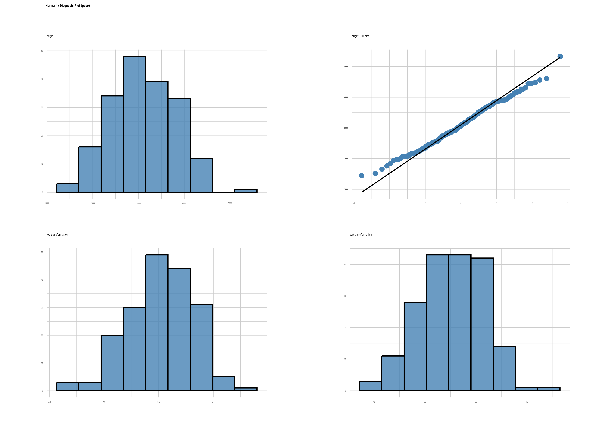
shapiro.test(datos2$peso)
Shapiro-Wilk normality test
data: datos2$peso
W = 0.98951, p-value = 0.1774datos2 |>
plot_normality()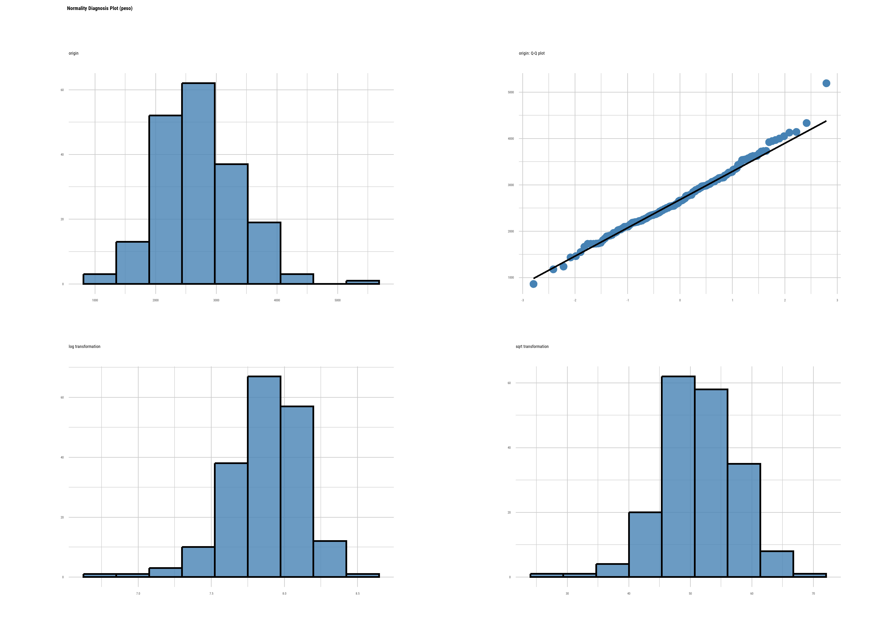
Se cumple con el supuesto de normalidad, ahora procedemos a comparar varianzas usando la función var.test():
var.test(datos1$peso, datos2$peso)
F test to compare two variances
data: datos1$peso and datos2$peso
F = 1.1644, num df = 185, denom df = 189, p-value = 0.2986
alternative hypothesis: true ratio of variances is not equal to 1
95 percent confidence interval:
0.8736082 1.5526583
sample estimates:
ratio of variances
1.164392 Como las varianzas son iguales, aplicamos un \(t\) test para comparar medias de dos poblaciones independientes con varianzas iguales planteando un contraste bilateral:
\[ H_0: \mu_1 = \mu_2 \\ H_1: \mu_1 \neq \mu_2 \]
t.test(x = datos1$peso,
y = datos2$peso,
alternative = "two.sided",
var.equal = TRUE)
Two Sample t-test
data: datos1$peso and datos2$peso
t = 5.8252, df = 374, p-value = 1.231e-08
alternative hypothesis: true difference in means is not equal to 0
95 percent confidence interval:
266.9644 539.0356
sample estimates:
mean of x mean of y
3103 2700 O también podríamos plantear un contraste unilateral, si consideramos que nuestra hipótesis de trabajo es que el peso de los bebés de madres que no consumen cocaína es mayor que aquellos de madres que sí consumen.
\[ H_0: \mu_1 = \mu_2 \\ H_1: \mu_1 > \mu_2 \quad ó \quad \mu_1 - \mu_2 > 0 \]
t.test(x = datos1$peso,
y = datos2$peso,
alternative = "greater",
var.equal = TRUE)
Two Sample t-test
data: datos1$peso and datos2$peso
t = 5.8252, df = 374, p-value = 6.155e-09
alternative hypothesis: true difference in means is greater than 0
95 percent confidence interval:
288.9222 Inf
sample estimates:
mean of x mean of y
3103 2700 Concluimos que los pesos de los bebés hijos de madres que no consumen cocaína es significativamente mayor respecto de los hijos de madres que sí la consumen.
Inferencia sobre una población
En algunas situaciones, además de obtener intervalos de confianza para estimar parámetros como la media o la proporción poblacional, también puede ser de interés realizar contrastes de hipótesis sobre un valor específico de referencia. Este tipo de análisis se denomina inferencia sobre una población y permite evaluar si un parámetro poblacional es significativamente diferente de un valor dado.
Un caso común en epidemiología y medicina es el estudio de la eficacia de un tratamiento. Supongamos que queremos evaluar si un nuevo fármaco reduce la presión arterial en pacientes con un determinado síndrome. Se sabe que, en ausencia de tratamiento, la presión arterial media en estos pacientes es de 165 mmHg. Para investigar el efecto del fármaco, se administra a un grupo de 15 pacientes y se mide su presión arterial después del tratamiento.
Queremos evaluar si la presión arterial media en pacientes tratados con el nuevo fármaco es significativamente menor que la presión arterial histórica de 165 mmHg:
\(H_0: \mu = 165~mmHg\)
\(H_1: \mu < 165~mmHg\)
Este es un contraste unilateral a la izquierda, ya que buscamos evidencia de que el tratamiento reduce la presión arterial.
Cargamos los datos:
enfermos <- read_csv2("datos/enfermos.txt")Calculamos la media y el desvío estándar:
# A tibble: 1 × 2
media desvio
<dbl> <dbl>
1 152. 22.0Evaluamos normalidad:
shapiro.test(enfermos$V1)
Shapiro-Wilk normality test
data: enfermos$V1
W = 0.94967, p-value = 0.5192Este grupo de enfermos tratados con el nuevo fármaco tienen una media de aproximadamente 151.9619928, con un desvío de 21.9788237. Además, los datos cumplen con el supuesto de normalidad.
Realizamos la prueba de hipótesis para evaluar si este valor es significativamente menor a 165:
t.test(x = enfermos$V1,
alternative = "less",
mu = 165,
conf.level = 0.95)
One Sample t-test
data: enfermos$V1
t = -2.2975, df = 14, p-value = 0.01876
alternative hypothesis: true mean is less than 165
95 percent confidence interval:
-Inf 161.9573
sample estimates:
mean of x
151.962 Dado que \(p < 0.05\), rechazamos la hipótesis nula y concluimos que, con un nivel de confianza del 95%, el nuevo fármaco reduce significativamente la presión arterial en estos pacientes.
M. Rodríguez y Mendivelso (2018)
Hernández-Ávila (2011)
V. Rodríguez et al. (2003)
Ríus Díaz et al. (2012)
Daniel (2002)
Cáceres, Rafael Álvarez (2007)
Triola (2018)
Norman, GR y Streiner, DL (1996)
Glantz, S (2006)
«EPIDAT 4.2 - Consellería de Sanidade - Servizo Galego de Saúde» (s. f.)
(2025)
Manitz et al. (2021)
(Ryu 2024)
Referencias
Cáceres, Rafael Álvarez. 2007. Estadística aplicada a las ciencias de la salud. Ediciones Díaz de Santos.
Champely, Stephane. 2020. «pwr: Basic Functions for Power Analysis». https://CRAN.R-project.org/package=pwr.
Daniel, Wayne W. 2002. Bioestadística: Base para el análisis de las ciencias de la salud. 4.ª ed. Limusa Wiley.
«EPIDAT 4.2 - Consellería de Sanidade - Servizo Galego de Saúde». s. f. https://www.sergas.es/Saude-publica/EPIDAT-4-2.
Glantz, S. 2006. Bioestadística. 6.ª ed. Mexico: McGraw Hill.
Hernández-Ávila, Mauricio. 2011. Epidemiología: diseño y análisis de estudios. Buenos Aires: Editorial Médica Panamericana.
Manitz, Juliane, Mark Hempelmann, Goeran Kauermann, Helmut Kuechenhoff, Shuai Shao, Cornelia Oberhauser, Nina Westerheide, y Manuel Wiesenfarth. 2021. samplingbook: Survey Sampling Procedures. https://cran.r-project.org/web/packages/samplingbook/index.html.
Norman, GR, y Streiner, DL. 1996. Bioestadística. Madrid: Mosby/Doyma Libros.
R Core Team. 2025. «R: A Language and Environment for Statistical Computing». https://www.R-project.org/.
Ríus Díaz, Francisca, Francisco Javier Barón Lopez, Elisa Sánchez Font, y Luis Parras Guijosa. 2012. «Bioestadística: Métodos y Aplicaciones». http://virtual.uptc.edu.co/ova/estadistica/docs/libros/ftp.bioestadistica.uma.es/libro/.
Rodríguez, Milena, y Fredy Mendivelso. 2018. «Diseño de investigación de corte transversal». Revista Médica Sanitas 21 (3): 141-47. //revistas.unisanitas.edu.co/index.php/rms/article/view/368.
Rodríguez, VM, Verónica A Martínez Ordaz, José Roiz Hernández, Francisco Huazano García, y Armando Nieves Rentería. 2003. «Muestreo y tamaño de la muestra». Una guía práctica. Coahuila, México: El Cid Editor.
Ryu, Choonghyun. 2024. «dlookr: Tools for Data Diagnosis, Exploration, Transformation». https://CRAN.R-project.org/package=dlookr.
Triola, Mario F. 2018. ESTADÍSTICA Decimosegunda Edicion. Pearson Educación de México, SA de CV.